Computer
- Mac mini M4Apple
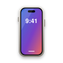
iPhone 18 Pro MaxApple- VA279HG, 27 inchASUS
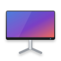
Second displaySamsung- Air96 V2NuPhy
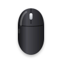
Ergonomic MouseIncase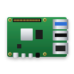
Pi 4Raspberry Pi- Apple Watch UltraApple
- Spare keyboard
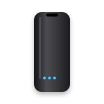
Power bankAmazon
Sound
- YetiBlue
- MR3Edifier
- Charge 5JBL
- Studio3Beats
Paper
- NotebookMoleskine
- Classic pencilsPaper Mate
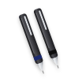
Vision Needleuni-ball
Wear
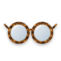
Tortoise shell roundsGiorgio Armani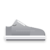
992New Balance- Polo Bear hoodiePolo Ralph Lauren
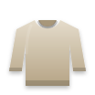
1977 sweaterEssentials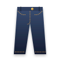
JeansPolo Ralph Lauren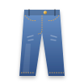
JeansLevi's- Yankees cap'47
- BagHerschel
Books
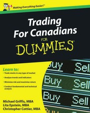
Trading For Canadians For DummiesMichael Griffis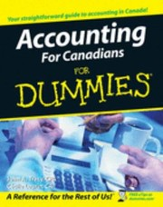
Accounting For Canadians For DummiesCecile Laurin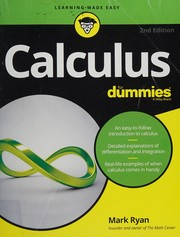
Calculus For DummiesMark Ryan- Pre-Calculus For DummiesMary Jane Sterling
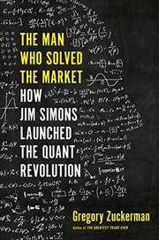
The Man Who Solved the MarketGregory Zuckerman- The Shopify StoryLarry MacDonald
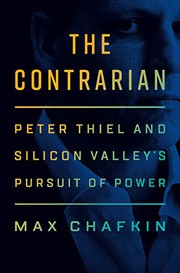
The ContrarianMax Chafkin- Super PumpedMike Isaac
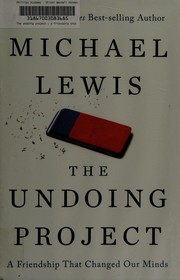
The Undoing ProjectMichael Lewis- BoomerangMichael Lewis
 Flash BoysMichael Lewis
Flash BoysMichael Lewis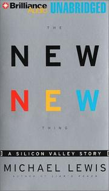
The New New ThingMichael Lewis- PanicMichael Lewis
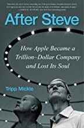
After SteveTripp Mickle- FiendPeter Stenson
 Hackers & PaintersPaul Graham
Hackers & PaintersPaul Graham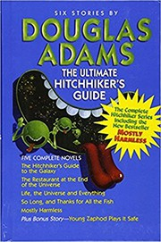
The Ultimate Hitchhiker's Guide to the GalaxyDouglas Adams- Accidentally Wes AndersonWally Koval
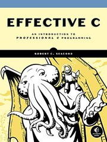
Effective CRobert C. Seacord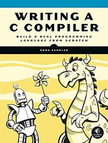
Writing a C CompilerNora Sandler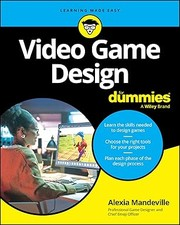
Video Game Design For Dummies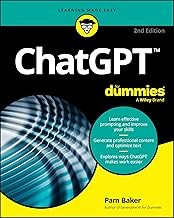
ChatGPT For DummiesPam Baker- Claude For DummiesStephanie Diamond
The rest
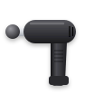
Massage gun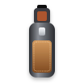
Nord 6SMOK- Acoustic guitarTaylor
- Cruiser board
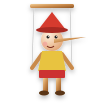
Pinocchio puppet- Sunflowers printVincent van Gogh
- Bowl of oranges print
© 2026 Joshua Trommel · Made in Langley, BC · Nothing here tracks you.